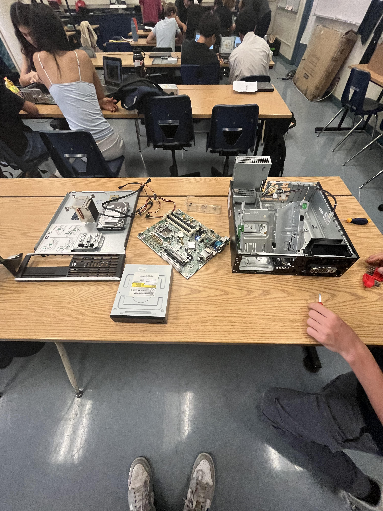

Welcome to Kevin's website
Rube Goldburg Machine (9/8/23-9/15/23)
I worked on Tinker-Cad to create an idea of what we wanted to do for our engineering project. For our project, to make the marble start at the top, then follow the road down and then push the hotwheel to pop the balloon. For the design, we had many difficulties but we had it to be succesful.
For our first idea, we had a bit of issues but we got into it and we solved the problem, because when we started to build we noticed it would be very hard to make the marble fall on the box and make it lift the other one like a weight machine and bring up the baseball and make it knock over dominoes that would keep falling until it hit the hotwheel and then make it pop the balloon.

Computer Engineering - Computer Disection
For this project we had to dissasemble a desktop and figure out how to assemble it again, it was fun to do it and to be able to build it back again because i really love to build pcs.For this unit, computer engineering, our main project was disecting a computer. Following the directions given on Google Classroom, we identified pieces and cables in the computer that we needed to detach in a certain order, and after a bit of trial and error, we managed to completely dissassemble and then re-assemble the computer! Only thing being, it didn't actually turn on when we were done, though we don't really know if it was supposed to work anyway.
Bioengineering - Hand
We're starting a bioengineering unit now. We saw some pretty cool videos on the uses of bioengineering, such silicone artificial heart and the robot cheetah. Our main project this time was making a prosthetic hand out of cardboard, rubber bands, and string. It ended up being a bit of a tricky project, because our hand wasn't exactly simple or elegent. We didn't use string but rather the metal wire that Duncan brought, which made it look cool but kind of janky, unfortunately.
Aerodynamics - Bottle Rockets
For our aerodynamics unit, we did another classic science project: bottle rockets! This turned out to be quite a bit more intensive than I thought it would be, and there were definitely more details than I there would be. For example: how to attach the parachute, or how to attach the cap, or how to attach the fins. There were many different ways we could do each thing, but through brainstorming and a bit of trial and error, Duncan and I created a pretty neat rocket with a plastic bag parachute inside a bottle nose, diagonally-placed fins, and quite a bit of super glue.